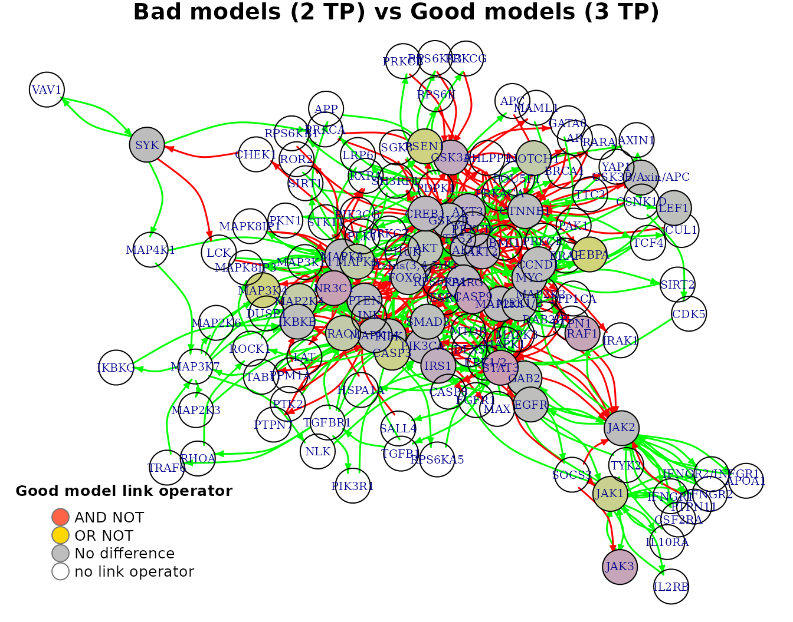
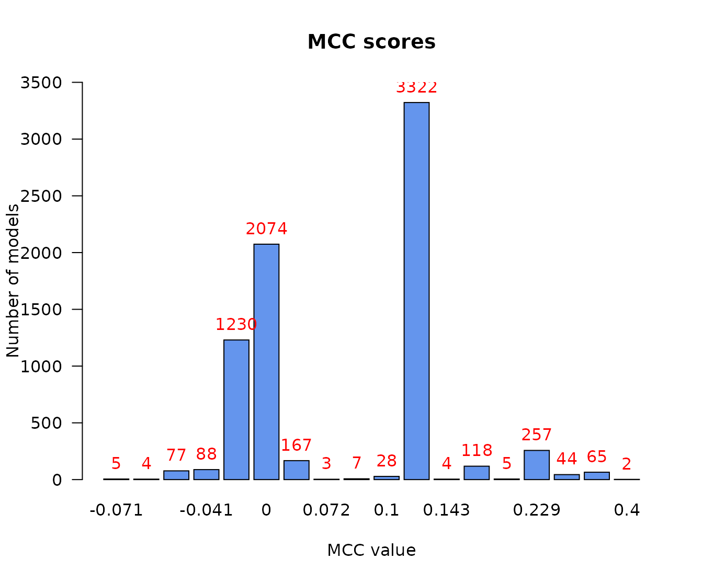
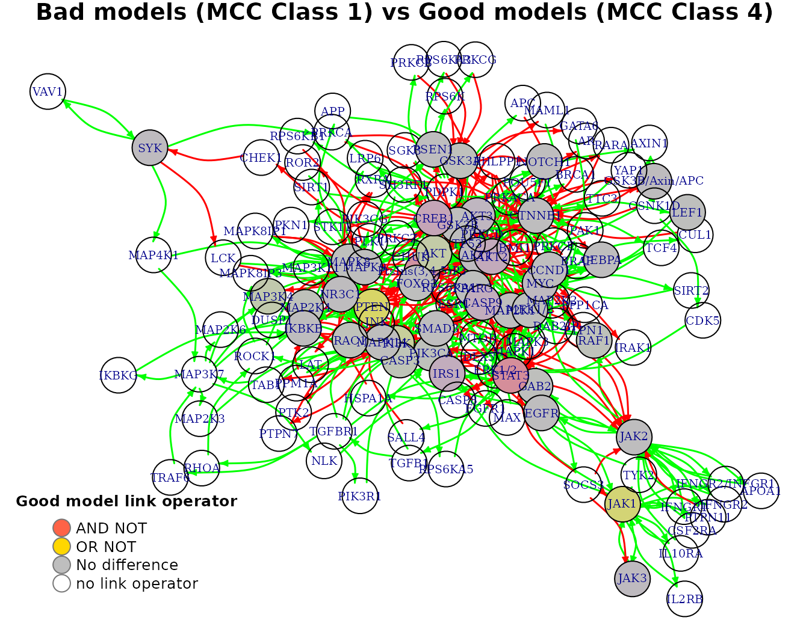

Intro
The emba R package name stands for Ensemble (Boolean) Model Biomarker Analysis. It’s main purpose is to be used on a dataset consisted of an ensemble of boolean models. These models are usually (but not necessarily) different versions of the same initial model, parameterized in different ways (e.g. some boolean operators in the model equations have changed from OR to AND or vice-versa). A prerequisite for using this package, is that this model dataset must be tested in-silico (using some computational way) against a list of drug combinations, in order to assess which drugs combinations behave synergistically for which models. An example software that generates such boolean model ensembles and performs a comprehensive drug response analysis on them is the DrugLogics NTNU software pipeline (see respective documentation).
Given a list of gold-standard (lab-observed/verified) synergies 1, this package enables the easy grouping of the models into different classes based on a specific performance metric evaluation. This model classification enables the discovery and visualization of biomarkers - nodes whose activity and/or boolean model parameterization might affect either the prediction performance of those models or the manifestation of the predicted synergies.
In the next sections we will describe the main inputs and outputs of the general analysis functions (which group a lot of functionality into one) and provide some insights on the implementation behind. Biomarkers will be assessed and visualized using a test dataset generated from the DrugLogics software mentioned above.
The complementary R package usefun has various helpful functions that are used both inside the emba package and during the analysis below.
For further analyses using this package on boolean model ensemble datasets see this GitHub repository. See also an example that demonstrates all the intermediate steps included in the general analysis functions as well as other miscellaneous usages that this guide does not cover. Lastly, you might also want to check a nice presentation I made for a conference about this package.
Input
Test dataset
The test dataset we will use has \(7500\) boolean models with \(139\) nodes each. It helps to think of each boolean model as a network of nodes where the edges represent either activation or inhibition of the corresponding target and the nodes activity can be either active (1) or inactive (0).
The models have been assessed for synergy against a total of \(153\) drug combinations.
data.list = readRDS(url("https://github.com/bblodfon/emba/blob/main/vignettes/data.rds?raw=true"))
model.predictions = data.list$model.predictions
models.stable.state = data.list$models.stable.state
models.link.operator = data.list$models.equations
observed.synergies = data.list$observed.synergies
# (x,y) coordinates for visualization
nice.layout = data.list$nice.layout
# model network as an igraph object
net = data.list$net
# drug combinations
drug.combos = colnames(model.predictions)
# change model names (shorter names for readability)
model.names = paste0("model", 1:7500)
rownames(model.predictions) = model.names
rownames(models.stable.state) = model.names
rownames(models.link.operator) = model.namesModel Predictions
This data represents the results of in-silico testing the boolean models against a drug combination dataset. More specifically, the model predictions is a data.frame whose values (corresponding to a specific model-drug combination element) can be one of the following:
- 0 (no synergy predicted)
- 1 (synergy was predicted)
-
NA(in case the model couldn’t be assessed for synergy, e.g. there were no stable states in either the drug combination perturbed model or in any of the two single-drug perturbed models).
model.predictions[1:5, 77:84] %>% kable(caption = "Model predictions example")| PI-JN | PI-D1 | PI-60 | PI-SB | PI-RU | PI-D4 | PI-F4 | PI-ST | |
|---|---|---|---|---|---|---|---|---|
| model1 | 0 | 0 | 0 | 0 | 0 | 0 | 0 | NA |
| model2 | 0 | 0 | 0 | 0 | 0 | 0 | 0 | NA |
| model3 | NA | NA | NA | NA | NA | NA | NA | NA |
| model4 | 0 | 1 | 0 | NA | 0 | NA | 0 | NA |
| model5 | 0 | 1 | 0 | 0 | 0 | 0 | 1 | NA |
Model stable states
Each model must have a stable state configuration where the nodes have fixed to either 0 (inactive state) or 1 (active state). In other words, a fixpoint attractor. Of course, if a model has multiple attractors or other methods are used to derive a solution to the system of boolean equations that is the model itself, then continuous activity state values (in the \([0,1]\) interval) are also supported.
models.stable.state[1:5, 5:11] %>% kable(caption = "Model stable states example")| MAP3K4 | MAP2K4 | IKBKG | IKBKB | AKT1 | BRAF | SMAD3 | |
|---|---|---|---|---|---|---|---|
| model1 | 0 | 1 | 1 | 1 | 1 | 0 | 1 |
| model2 | 0 | 1 | 1 | 1 | 0 | 0 | 0 |
| model3 | 0 | 1 | 1 | 1 | 1 | 0 | 1 |
| model4 | 0 | 1 | 1 | 1 | 0 | 0 | 1 |
| model5 | 0 | 1 | 1 | 0 | 0 | 0 | 1 |
Model link operators
This is a non-essential input for the functions we will use, but we include it here since the test dataset supports it. It is a way to represent the structure (parameterization) of the boolean models in the dataset.
If each boolean model is a list of boolean equations of the form:
T = (A1 OR A2 OR ...) AND NOT (I1 OR I2 OR ...)
, where the A and I nodes are the activating and inhibiting regulators respectively of the target node T and the AND NOT is the link (balance) operator, we can specify a data.frame object whose values (corresponding to a specific model-target node element) can be one of the following:
- 0 (
AND NOTlink operator) - 1 (
OR NOTlink operator) - 0.5 (if the target node does not have both activating and inhibiting regulators and thus the corresponding boolean equation has no link operator)
models.link.operator[1:5, 1:10] %>% kable(caption = "Models link operator example")| MAP3K4 | MAP2K4 | IKBKB | AKT1 | SMAD3 | GSK3B | RAF1 | GAB2 | CTNNB1 | NR3C1 | |
|---|---|---|---|---|---|---|---|---|---|---|
| model1 | 0 | 1 | 1 | 1 | 1 | 1 | 0 | 0 | 1 | 0 |
| model2 | 0 | 0 | 1 | 0 | 0 | 1 | 0 | 1 | 1 | 0 |
| model3 | 0 | 1 | 1 | 1 | 1 | 1 | 0 | 1 | 1 | 0 |
| model4 | 0 | 0 | 1 | 0 | 1 | 1 | 0 | 1 | 1 | 0 |
| model5 | 0 | 1 | 0 | 0 | 1 | 1 | 1 | 1 | 1 | 0 |
Note that in the test dataset, the nodes (columns of the models.link.operator object) who didn’t have a link operator are pruned.
Observed (GS) synergies
A list of gold standard (GS) drug combinations which have been termed as synergistic via experimental and/or other computational methods. These drug combinations must be a subset of the ones tested in the models (the column names of the model.predictions data).
usefun::pretty_print_vector_values(observed.synergies, vector.values.str = "observed synergies")17 observed synergies: AK-60, AK-BI, AK-D1, PI-D1, PD-G2, AK-G4, D1-G4, PI-JN, BI-P5, PD-P5, PI-P5, AK-PD, BI-PD, AK-PI, BI-PI, PD-PI, PK-ST
Performance biomarkers
Performance biomarkers are nodes in our studied networks (boolean models) whose activity state and/or boolean model parameterization (link operator) affects the prediction performance of those models. These nodes can be thus used as indicators of either activity or structural changes that have a positive effect on the prediction performance of our models.
The model performance can be assessed via various ways. In this package we offer two ways to group the models to different classification categories: either based on the number of true positive (TP) predictions or on the Matthews correlation coefficient (MCC) score with respect to the drug combination dataset tested for synergy. The function emba::biomarker_tp_analysis() is used for the former classification and the function emba::biomarker_mcc_analysis() for the latter. Note that it’s generally better to use the MCC classification, since it’s a more robust performance evaluation metric compared to the number of TP predictions, since it takes into account all of the four confusion matrix values.
When the models have been grouped to different classification categories, their nodes activity or boolean model parameterization can be summarised in each group and compared to the others, obtaining thus the expected biomarkers using the methodology described below.
TP-based analysis
We use the emba::biomarker_tp_analysis() function with the specified inputs:
tp.analysis.res = emba::biomarker_tp_analysis(
model.predictions,
models.stable.state,
models.link.operator,
observed.synergies,
penalty = 0.1,
threshold = 0.55)The penalty term is used to reduce the bias when model groups have different sizes. For example, if I were to compare the average activity of nodes between two groups of models, with respective group sizes 5 and 1000, then the result would be heavily biased towards the group with the larger size, making thus the quality of the results coming out of this comparison questionable. As such, with penalty values closer to 0, more bias is introduced and we expect more biomarkers to be found. The default value of \(0.1\) is a good rule-of-thumb choice for minimizing such biases. See more info on emba::get_vector_diff().
As a first result, we get the predicted synergies - i.e. the drug combinations that are a subset of the observed ones and were predicted by at least one of the models in the dataset:
usefun::pretty_print_vector_values(tp.analysis.res$predicted.synergies, vector.values.str = "predicted synergies")5 predicted synergies: AK-PD, BI-PD, BI-PI, PD-PI, PI-D1
The percentage of true positive predicted synergies is thus 29.4%. Such a low number might be a sign that the models quality is poor (need for a different parameterization) or other reasons like incorrect assessment of the gold standard synergies, etc.
The next informative barplot shows the distribution of models according to their true positive predictions:
pr(emba::make_barplot_on_models_stats(table(tp.analysis.res$models.synergies.tp),
title = "True Positive Synergy Predictions",
xlab = "Number of maximum correctly predicted synergies",
ylab = "Number of models"))
- The maximum number of predicted synergies by any individual model is 3
- There are only 2 models in total that could predict these 3 synergies
- Almost half of the models make no true positive predictions
- This model classification is largely skewed
Next result we get is the average activity differences per network node for all group classifications:
tp.analysis.res$diff.state.tp.mat %>%
as.data.frame() %>%
select(c("AKT","PTEN","PSEN1","STAT3","CEBPA")) %>% # show only part of the matrix
kable(caption = "Average Activity Difference Matrix")| AKT | PTEN | PSEN1 | STAT3 | CEBPA | |
|---|---|---|---|---|---|
| (0,1) | -0.0278105 | 0.4462906 | -0.0012761 | 0.2316447 | 0.0283239 |
| (0,2) | -0.0851093 | 0.3814671 | 0.0104114 | 0.0200058 | 0.0118586 |
| (0,3) | 0.0175886 | 0.2594653 | 0.4728458 | -0.3232749 | 0.4327603 |
| (1,2) | -0.0630977 | 0.0363188 | 0.0113038 | -0.1576796 | -0.0099449 |
| (1,3) | 0.0306321 | 0.0456991 | 0.4695673 | -0.4304678 | 0.4157744 |
| (2,3) | 0.0916724 | 0.0305575 | 0.6086029 | -0.4379904 | 0.5551273 |
- Rows represent the different classification group matchings, e.g. (1,2) means the models that predicted 1 TP synergy vs the models that predicted 2 TP synergies.
- All values are in the \([-1,1]\) interval. The more negative the activity difference value, the more inhibited the node is in the better performance models (e.g.
STAT3node). The more positive the activity difference value, the more active the node is in the better performance models (e.g.CEBPAnode). - Based on a user-given
thresholdlevel, a node is declared as an activity biomarker if it’s highest absolute value surpasses that threshold (seeemba::get_biomarkers()for more info).
In our case, threshold = 0.55 and thus CEBPA and PSEN1 are returned as active biomarkers:
usefun::pretty_print_vector_values(tp.analysis.res$biomarkers.tp.active,
vector.values.str = "active biomarkers")2 active biomarkers: PSEN1, CEBPA
usefun::pretty_print_vector_values(tp.analysis.res$biomarkers.tp.inhibited,
vector.values.str = "inhibited biomarkers")0 inhibited biomarkers:
With the models initial network as an igraph object (see emba::construct_network() on how to create such a net object), we can visualize every row of the above matrix as follows:
pr(emba::plot_avg_state_diff_graph(net, tp.analysis.res$diff.state.tp.mat["(2,3)",],
layout = nice.layout, title = "Bad models (2 TP) vs Good models (3 TP)"))
Note that with less penalty, more bias would be introduced and thus more biomarkers would be found (even for a higher chosen threshold):
tp.analysis.res.biased = emba::biomarker_tp_analysis(
model.predictions,
models.stable.state,
models.link.operator,
observed.synergies,
penalty = 0,
threshold = 0.7)
usefun::pretty_print_vector_values(tp.analysis.res.biased$biomarkers.tp.active,
vector.values.str = "active biomarkers")13 active biomarkers: PSEN1, CEBPA, MAPK8IP1, MAPK9, JAK1, TYK2, JAK3, IFNGR2/INFGR1, IFNGR1, PTPN11, IFNGR2, IL2RB, IL10RA
usefun::pretty_print_vector_values(tp.analysis.res.biased$biomarkers.tp.inhibited,
vector.values.str = "inhibited biomarkers")17 inhibited biomarkers: MAP3K7, MAP2K6, MAP2K3, NLK, IKBKG, STAT3, RXRA, SOCS3, TGFB1, HSPA1A, SALL4, ROCK1, TGFBR1, TRAF6, RHOA, PIK3R1, CASP9
Last result we get is the average link operator differences per network node (whose boolean equation had a link operator) for all group classifications:
tp.analysis.res$diff.link.tp.mat %>%
as.data.frame() %>%
select(c("AKT","PTEN","PSEN1","STAT3","CEBPA")) %>% # show only part of the matrix
kable(caption = "Average Link Operator Difference Matrix")| AKT | PTEN | PSEN1 | STAT3 | CEBPA | |
|---|---|---|---|---|---|
| (0,1) | 0.2019689 | 0.4291810 | -0.0047786 | 0.2316447 | 0.0269599 |
| (0,2) | 0.1116284 | 0.3682466 | -0.1722642 | 0.0200058 | 0.0101784 |
| (0,3) | 0.1588424 | 0.2512846 | 0.2915064 | -0.3232749 | 0.4356235 |
| (1,2) | -0.0440675 | 0.0363188 | -0.1671873 | -0.1576796 | -0.0105660 |
| (1,3) | 0.0617622 | 0.0456991 | 0.2913783 | -0.4304678 | 0.4192610 |
| (2,3) | 0.1171370 | 0.0305575 | 0.5194769 | -0.4379904 | 0.5602202 |
- Rows again represent the different classification group matchings, e.g. (1,2) means the models that predicted 1 TP synergy vs the models that predicted 2 TP synergies.
- All values are in the \([-1,1]\) interval. A value closer to \(-1\) means that on average, the node’s boolean equation has the AND NOT link operator in the better performance models (e.g.
STAT3node). A value closer to \(1\) means that on average, the node’s boolean equation has mostly the OR NOT link operator in the better performance models (e.g.CEBPAnode). - Based on the given
thresholdlevel, a node is declared as a link operator biomarker if it’s highest absolute value surpasses that threshold (seeemba::get_biomarkers()for more info).
In our case, threshold = 0.55 and thus CEBPA is returned as an OR link operator biomarker:
usefun::pretty_print_vector_values(tp.analysis.res$biomarkers.tp.or,
vector.values.str = "'OR' biomarkers")1 ‘OR’ biomarker: CEBPA
usefun::pretty_print_vector_values(tp.analysis.res$biomarkers.tp.and,
vector.values.str = "'AND' biomarkers")0 ‘AND’ biomarkers:
We can also visualize every row of the average link operator differences matrix as follows:
pr(emba::plot_avg_link_operator_diff_graph(net, tp.analysis.res$diff.link.tp.mat["(2,3)",],
layout = nice.layout, title = "Bad models (2 TP) vs Good models (3 TP)"))
Interpreting the result regarding the CEBPA biomarker, we look back at its boolean equation and we see that the higher performance models must have the OR NOT link operator in order for CEBPA to be in an active (ON) state (an AND NOT results mostly on an inhibited state for CEBPA):
CEBPA = (GSK3B OR MAP2K1 OR MEK1/2) OR NOT CTNNB1
MCC-based analysis
We use the emba::biomarker_mcc_analysis() function with the specified inputs:
mcc.analysis.res = emba::biomarker_mcc_analysis(
model.predictions,
models.stable.state,
models.link.operator,
observed.synergies,
threshold = 0.65,
num.of.mcc.classes = 4,
penalty = 0.2)- The
penaltyterm is used to reduce the bias when model groups have different sizes (default value is \(0.1\)). See more info about this on the TP-based analysis above and on the documentation of the functionemba::get_vector_diff(). - We can choose the number of model groups to be created (
num.of.mcc.classesparameter, with default value \(5\)). Internally, the functionCkmeans.1d.dp()is used to perform an optimal univariate k-means clustering on the models MCC scores, i.e. it groups the models to different MCC classes, with higher classes having higher MCC scores (corresponding thus to better performance models).
First result is the predicted synergies, which are the same as the ones found with the TP-based analysis (the model predictions did not change). As such, the drug combinations which were predicted by at least one of the models in the dataset are:
usefun::pretty_print_vector_values(mcc.analysis.res$predicted.synergies, vector.values.str = "predicted synergies")5 predicted synergies: AK-PD, BI-PD, BI-PI, PD-PI, PI-D1
We can get a first idea of the range and distribution of the models MCC scores with the next barplot:
pr(emba::make_barplot_on_models_stats(table(mcc.analysis.res$models.mcc),
title = "MCC scores", xlab = "MCC value",
ylab = "Number of models", cont.values = TRUE))
- There are no relatively bad models (MCC values close to \(-1\))
- Most of the models perform a little better than random prediction (\(MCC > 0\))
We can also plot the MCC-model histogram, which in addition shows the estimated density (how many models) and width (MCC range) of each MCC class:
models.mcc = mcc.analysis.res$models.mcc
num.of.mcc.classes = 4
res = Ckmeans.1d.dp(x = models.mcc, k = num.of.mcc.classes)
models.cluster.ids = res$cluster
pr(emba::plot_mcc_classes_hist(models.mcc, models.cluster.ids, num.of.mcc.classes))Next result we get is the average activity differences per network node for all group classifications:
mcc.analysis.res$diff.state.mcc.mat %>%
as.data.frame() %>%
select(c("AKT","PPM1A","PTEN","PSEN1","PTK2","CEBPA")) %>% # show only part of the matrix
kable(caption = "Average Activity Difference Matrix")| AKT | PPM1A | PTEN | PSEN1 | PTK2 | CEBPA | |
|---|---|---|---|---|---|---|
| (1,2) | -0.0263106 | 0.5637404 | 0.5637404 | 0.0002462 | -0.5637404 | -0.0180814 |
| (1,3) | -0.0419764 | 0.6791224 | 0.6791224 | -0.0004583 | -0.6791224 | 0.0189502 |
| (1,4) | -0.0551735 | 0.6416618 | 0.6416618 | 0.0039844 | -0.6416618 | -0.0054756 |
| (2,3) | -0.0196324 | 0.1787135 | 0.1787135 | -0.0007511 | -0.1787135 | 0.0390053 |
| (2,4) | -0.0300506 | 0.1517566 | 0.1517566 | 0.0034388 | -0.1517566 | 0.0088853 |
| (3,4) | -0.0138152 | 0.0141918 | 0.0141918 | 0.0036747 | -0.0141918 | -0.0191041 |
- Rows represent the different classification group matchings, e.g. (1,2) means the models that were in the 1st MCC class vs the models that were in the 2nd MCC class.
- All values are in the \([-1,1]\) interval. The more negative the activity difference value, the more inhibited the node is in the better performance models (e.g.
PTK2). The more positive the activity difference value, the more active the node is in the better performance models (e.g.PPM1A,PTEN). - Based on a user-given
thresholdlevel, a node is declared as an activity biomarker if it’s highest absolute value surpasses that threshold (seeemba::get_biomarkers()for more info).
In our case, threshold = 0.65 and thus PTEN and PPM1A are returned as active biomarkers and PTK2 as an inhibited biomarker:
usefun::pretty_print_vector_values(mcc.analysis.res$biomarkers.mcc.active,
vector.values.str = "active biomarkers")2 active biomarkers: PTEN, PPM1A
usefun::pretty_print_vector_values(mcc.analysis.res$biomarkers.mcc.inhibited,
vector.values.str = "inhibited biomarkers")1 inhibited biomarker: PTK2
Note that looking at the respective boolean equations:
PPM1A = PTENPTK2 = not PTEN
we conclude that the only activity biomarker of interest is PTEN as it’s the only regulator whose state directly influences the PPM1A and PTK2 nodes.
With the models initial network as an igraph object (see emba::construct_network() on how to create such a net object), we can visualize every row of the above matrix as follows:
pr(emba::plot_avg_state_diff_graph(net, mcc.analysis.res$diff.state.mcc.mat["(1,4)",],
layout = nice.layout, title = "Bad models (MCC Class 1) vs Good models (MCC Class 4)"))Last result we get is the average link operator differences per network node (whose boolean equation had a link operator) for all group classifications:
mcc.analysis.res$diff.link.mcc.mat %>%
as.data.frame() %>%
select(c("AKT","PTEN","PSEN1","CEBPA","STAT3","JAK1")) %>% # show only part of the matrix
kable(caption = "Average Link Operator Difference Matrix")| AKT | PTEN | PSEN1 | CEBPA | STAT3 | JAK1 | |
|---|---|---|---|---|---|---|
| (1,2) | 0.2793768 | 0.5880847 | 0.0466807 | -0.0280618 | -0.3069948 | 0.2806183 |
| (1,3) | 0.3182545 | 0.6791224 | 0.0115062 | 0.0114039 | 0.0664054 | -0.0648736 |
| (1,4) | 0.2860364 | 0.6416618 | -0.0109073 | -0.0060220 | -0.6043843 | 0.5783232 |
| (2,3) | 0.0684637 | 0.1542205 | -0.0343283 | 0.0407584 | 0.3818048 | -0.3535848 |
| (2,4) | 0.0461114 | 0.1330813 | -0.0457409 | 0.0160442 | -0.3147733 | 0.3112794 |
| (3,4) | -0.0055788 | 0.0141918 | -0.0179237 | -0.0137708 | -0.5550172 | 0.5321063 |
- Rows again represent the different classification group matchings, e.g. (1,2) means the models that were in the 1st MCC class vs the models that were in the 2nd MCC class.
- All values are in the \([-1,1]\) interval. A value closer to \(-1\) means that on average, the node’s boolean equation has the AND NOT link operator in the better performance models (e.g.
STAT3node). A value closer to \(1\) means that on average, the node’s boolean equation has mostly the OR NOT link operator in the better performance models (e.g.PTENnode). - Based on the given
thresholdlevel, a node is declared as a link operator biomarker if it’s highest absolute value surpasses that threshold (seeemba::get_biomarkers()for more info).
In our case, threshold = 0.65 and thus PTEN is returned as an OR link operator biomarker:
usefun::pretty_print_vector_values(mcc.analysis.res$biomarkers.mcc.or,
vector.values.str = "'OR' biomarkers")1 ‘OR’ biomarker: PTEN
usefun::pretty_print_vector_values(mcc.analysis.res$biomarkers.mcc.and,
vector.values.str = "'AND' biomarkers")0 ‘AND’ biomarkers:
We can also visualize every row of the average link operator differences matrix as in the following example:
pr(emba::plot_avg_link_operator_diff_graph(net, mcc.analysis.res$diff.link.mcc.mat["(1,4)",],
layout = nice.layout, title = "Bad models (MCC Class 1) vs Good models (MCC Class 4)"))
Comparing the 2 methods
Overall, we note that using the more robust MCC score to classify the models according to their prediction performance on the drug combination dataset they were tested on, produces more reliable biomarkers compared to using the simple number of true positive predictions. In addition, the biomarker results are different between the 2 methods, e.g. the TP-analysis revealed CEBPA as an active state performance biomarker whereas the MCC-based analysis showed PTEN to be so.
Synergy biomarkers
Synergy biomarkers are nodes in our studied networks (boolean models) whose activity state and/or boolean model parameterization (link operator) affects the manifestation of synergies. These nodes can be thus used as indicators of either activity or structural changes that make the models predict specific drug combinations as synergistic.
The core idea behind the implementation is that the models are now classified to groups based on whether they predict or not each one of the predicted synergies (which for the test dataset are the same 5 as found with the previous analyses). Thus, by comparing the average node activity or boolean model parameterization from the group that predicted a drug combination as a synergy vs the group that predicted it to be an antagonism, we can derive biomarkers for that drug combination.
The function used to perform such an analysis is the emba::biomarker_tp_analysis():
synergy.analysis.res = emba::biomarker_synergy_analysis(
model.predictions,
models.stable.state,
models.link.operator,
observed.synergies,
threshold = 0.5,
calculate.subsets.stats = TRUE,
penalty = 0.1)Now in addition to the predicted synergies set, we get all the subsets for which a model predicted all drug combinations in that subset as synergistic. We can visualize this result with the emba::make_barplot_on_synergy_subset_stats() function:
pr(emba::make_barplot_on_synergy_subset_stats(
synergy.analysis.res$synergy.subset.stats,
threshold.for.subset.removal = 1,
bottom.mar = 9))- Almost half of the models (\(3478\)) predict none of the gold standard synergies
- The
PI-D1synergy is predicted by almost all the rest of the models - There were only \(2\) models that predicted \(3\) gold standard synergies, i.e. the set
BI-PD,PD-PI,PI-D1which is the maximum number of predicted synergies by an individual model
Next result is the matrix of activity state differences vectors, one for each of the predicted synergies:
synergy.analysis.res$diff.state.synergies.mat[,1:8] %>%
kable(caption = "Average State Differences per Synergy Predicted", digits = 3)| MAP3K7 | MAP2K6 | MAP2K3 | NLK | MAP3K4 | MAP2K4 | IKBKG | IKBKB | |
|---|---|---|---|---|---|---|---|---|
| AK-PD | 0.104 | 0.104 | 0.104 | 0.104 | -0.016 | 0.054 | 0.104 | 0.016 |
| BI-PD | -0.790 | -0.790 | -0.790 | -0.790 | -0.026 | -0.416 | -0.790 | 0.003 |
| BI-PI | 0.045 | 0.045 | 0.045 | 0.045 | 0.004 | 0.044 | 0.045 | 0.018 |
| PD-PI | -0.314 | -0.314 | -0.314 | -0.314 | 0.005 | -0.147 | -0.314 | -0.033 |
| PI-D1 | 0.080 | 0.080 | 0.080 | 0.080 | 0.002 | 0.103 | 0.080 | -0.018 |
- Every row refers to a different predicted synergy in the dataset. The columns are the network nodes.
- Every row is the result of comparing two model groups: the synergistic group (models that predicted the row-annotated drug combination as synergistic) vs the antagonistic group (models that predicted the row-annotated drug combination as antagonistic).
- All values are in the \([−1,1]\) interval. The more negative (positive) the activity difference value, the more inhibited (active) the node is in the synergistic model group.
- Based on a user-given
thresholdlevel, a node for a specific synergy is declared as an activity biomarker if it’s highest absolute value surpasses that threshold (seeemba::get_biomarkers()for more info).
Every row of the above matrix can be also network-plotted. We show for example the average state difference graph for the PI-D1 synergy:
pr(emba::plot_avg_state_diff_graph(net,
synergy.analysis.res$diff.state.synergies.mat["PI-D1",],
layout = nice.layout, title = "Prediction of PI-D1 (Good Models: synergy, Bad Models: antagonism)"))Given the user-defined threshold (\(0.5\)) we also get as a result the activity state biomarkers:
# prune nodes (columns) that were not found as biomarkers for any predicted synergy
biomarker.act.mat = usefun::prune_columns_from_df(
df = synergy.analysis.res$activity.biomarkers, value = 0)
biomarker.act.mat[, 4:12] %>% # show only part of the matrix
kable(caption = "Activity State Biomarkers Per Synergy Predicted")| NLK | IKBKG | CREB1 | STAT3 | PTEN | PtsIns(3,4,5)P3 | JAK1 | TYK2 | JAK3 | |
|---|---|---|---|---|---|---|---|---|---|
| AK-PD | 0 | 0 | 0 | 0 | 0 | 0 | 0 | 0 | 0 |
| BI-PD | -1 | -1 | 0 | -1 | 0 | 0 | 1 | 1 | 1 |
| BI-PI | 0 | 0 | 0 | 0 | 0 | 0 | 0 | 0 | 0 |
| PD-PI | 0 | 0 | 0 | 0 | 0 | 0 | 0 | 0 | 0 |
| PI-D1 | 0 | 0 | -1 | 0 | 1 | -1 | 0 | 0 | 0 |
- In the above matrix, \(1\) means active state biomarker, \(-1\) inhibited state biomarker and \(0\) means not a biomarker.
- Using the following code, you can filter and derive your own activity biomarkers matrix:
# define your own threshold
my.thres = 0.76
activity.biomarkers.new = as.data.frame(apply(
synergy.analysis.res$diff.state.synergies.mat, c(1,2),
usefun::get_ternary_class_id, my.thres))Note that there were predicted synergies (rows in the above matrix), for which we couldn’t find activity biomarkers (row was all zeros). This is justifiable, since the number of models in the synergistic and antagonistic model groups can be fairly unbalanced and the penalty term is used to correct this bias. For example, comparing the models that predict AK-PD as synergistic vs those that predict it as antagonistic, we have:
drug.comb = "AK-PD"
syn.models.num = sum(model.predictions[, drug.comb] == 1 & !is.na(model.predictions[, drug.comb]))
ant.models.num = sum(model.predictions[, drug.comb] == 0 & !is.na(model.predictions[, drug.comb]))
usefun::pretty_print_string(paste0("Number of models (AK-PD): #Synergistic: ", syn.models.num, ", #Antagonistic: ", ant.models.num))Number of models (AK-PD): #Synergistic: 3, #Antagonistic: 6214
Lastly, the synergy.analysis.res$diff.link.synergies.mat result is a matrix that contains the average link operator differences per network node (whose boolean equation had a link operator) when comparing the synergistic vs antagonistic model groups for each predicted synergy. The corresponding link operator biomarkers (based on the given threshold) are given in the synergy.analysis.res$link.operator.biomarkers output.
R Session Info
R version 3.6.3 (2020-02-29)
Platform: x86_64-pc-linux-gnu (64-bit)
Running under: Ubuntu 20.04.1 LTS
Matrix products: default
BLAS: /usr/lib/x86_64-linux-gnu/blas/libblas.so.3.9.0
LAPACK: /usr/lib/x86_64-linux-gnu/lapack/liblapack.so.3.9.0
locale:
[1] LC_CTYPE=en_US.UTF-8 LC_NUMERIC=C
[3] LC_TIME=en_US.UTF-8 LC_COLLATE=en_US.UTF-8
[5] LC_MONETARY=en_US.UTF-8 LC_MESSAGES=en_US.UTF-8
[7] LC_PAPER=en_US.UTF-8 LC_NAME=C
[9] LC_ADDRESS=C LC_TELEPHONE=C
[11] LC_MEASUREMENT=en_US.UTF-8 LC_IDENTIFICATION=C
attached base packages:
[1] stats graphics grDevices utils datasets methods base
other attached packages:
[1] Ckmeans.1d.dp_4.3.3 knitr_1.30 dplyr_1.0.2
[4] usefun_0.4.8 emba_0.1.8
loaded via a namespace (and not attached):
[1] Rcpp_1.0.5 highr_0.8 compiler_3.6.3 pillar_1.4.7
[5] tools_3.6.3 digest_0.6.27 jsonlite_1.7.2 evaluate_0.14
[9] memoise_1.1.0 lifecycle_0.2.0 tibble_3.0.4 pkgconfig_2.0.3
[13] rlang_0.4.9 igraph_1.2.6 rstudioapi_0.13 yaml_2.2.1
[17] pkgdown_1.6.1 xfun_0.19 stringr_1.4.0 htmlwidgets_1.5.3
[21] hms_0.5.3 desc_1.2.0 generics_0.1.0 fs_1.5.0
[25] vctrs_0.3.5 systemfonts_0.3.2 gbRd_0.4-11 rprojroot_2.0.2
[29] tidyselect_1.1.0 rje_1.10.16 glue_1.4.2 R6_2.5.0
[33] textshaping_0.2.1 Rdpack_2.1 rmarkdown_2.6 tidyr_1.1.2
[37] readr_1.4.0 purrr_0.3.4 magrittr_2.0.1 htmltools_0.5.0
[41] ellipsis_0.3.1 rbibutils_2.0 assertthat_0.2.1 ragg_0.4.0
[45] stringi_1.5.3 visNetwork_2.0.9 crayon_1.3.4 Note that the assessment of these synergies based on experimental data (usually High-Throughput Screening data) is an analysis on its own↩︎